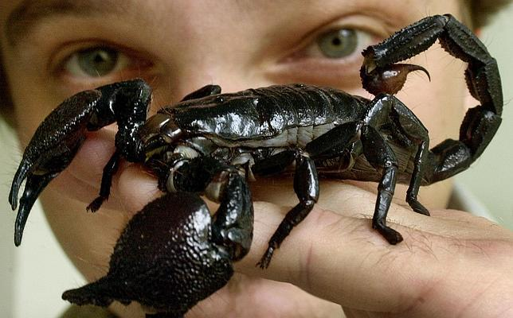

Escorpiones es un orden de artrópodos arácnidos depredadores conocidos comúnmente como escorpiones o alacranes. Se caracterizan por contar con un par de pinzas de agarre y una cola estrecha y segmentada, a menudo formando una reconocible curva hacia delante sobre la espalda y siempre rematada con un aguijón. La historia evolutiva de los escorpiones se remonta a hace unos cuatrocientos treinta y cinco millones de años, durante el Silúrico. Viven sobre todo en los desiertos, pero se han adaptado a una amplia gama de condiciones ambientales y se encuentran en todos los continentes, excepto en la Antártida. Se han descrito más de dos mil quinientas especies, divididas en veintidós familias existentes. Su taxonomía se encuentra en proceso de revisión para tener en cuenta los estudios genómicos del siglo XXI.

Se alimentan principalmente de insectos y otros invertebrados, aunque algunas especies consumen vertebrados. Utilizan sus pinzas para sujetar y matar a sus presas. Pueden utilizar su aguijón venenoso tanto para matar a su presa como para defenderse. A su vez los escorpiones son presa de otros animales de mayor tamaño. Durante el cortejo, el escorpión macho y la hembra se sujetan mutuamente con las pinzas y se mueven en una «danza» en la que el macho trata de dirigir a la hembra hacia su cápsula de esperma. La mayoría de las especies de este orden son vivíparas y la hembra cuida de las crías mientras sus exoesqueletos se endurecen, transportándolas sobre su espalda; su exoesqueleto contiene sustancias químicas fluorescentes y brilla bajo la luz ultravioleta.
La gran mayoría de las especies de escorpiones no suponen una amenaza grave para el ser humano y los adultos sanos no suelen necesitar tratamiento médico después de sufrir su picadura. Solo unas veinticinco especies cuentan con un veneno capaz de matar a un ser humano, pero en algunas partes del mundo donde hay especies muy venenosas se producen regularmente centenares de muertes de personas, sobre todo en zonas con dificultades de acceso a los tratamientos médicos. Los escorpiones están presentes en el arte, el folclore, la mitología y las marcas comerciales.